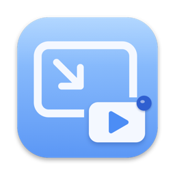

PinPlay
A floating video card that stays on top of every app on your Mac.
Getting started
Paste a video link into the card and press Play, press From Clipboard to play the link you copied, or drop a link onto the card. The card stays on top when you switch apps, change desktops, or use apps in full screen.
Send videos from your browser
Safari: the PinPlay button comes with the app. Open PinPlay's Settings and click Turn On in Safari, then tick PinPlay in Safari's Extensions settings.
Chrome, Edge, Brave: get the PinPlay extension from the Chrome Web Store and click Add to Chrome. Then open a YouTube video and click the PinPlay button in the player. The first time, Chrome asks to open PinPlay: tick Always allow so later clicks go straight to the card.
Bookmark button (Safari, Chrome, Firefox, Edge): drag this button to your bookmarks bar. On a YouTube video, click it and the video continues in PinPlay from the same second.
The first time, your browser asks whether to open PinPlay. Allow it, and tick “Always allow” if it's offered.
Keyboard shortcuts
⌃⌥⌘V show or hide the card · ⌃⌥⌘P play or pause · ⌃⌥⌘L click-through on or off. You can turn them off in Settings.
Common questions
How do I move or resize the card?
Move the mouse over the card to show the top bar. Drag the bar to move the card, and drag any edge to resize it.
Where did the card go?
Click the ▶︎ icon in the menu bar and choose Show / Hide Card, or press ⌃⌥⌘V. PinPlay has no Dock icon.
I can't click the card.
Click-through is on. Turn it off with ⌃⌥⌘L or from the menu bar icon.
A video won't play.
Some video owners turn off playback outside their own website. Those videos can't play in PinPlay; use the Safari button on the card to open them in your browser.
Contact
For help, bug reports or ideas, open a support request.